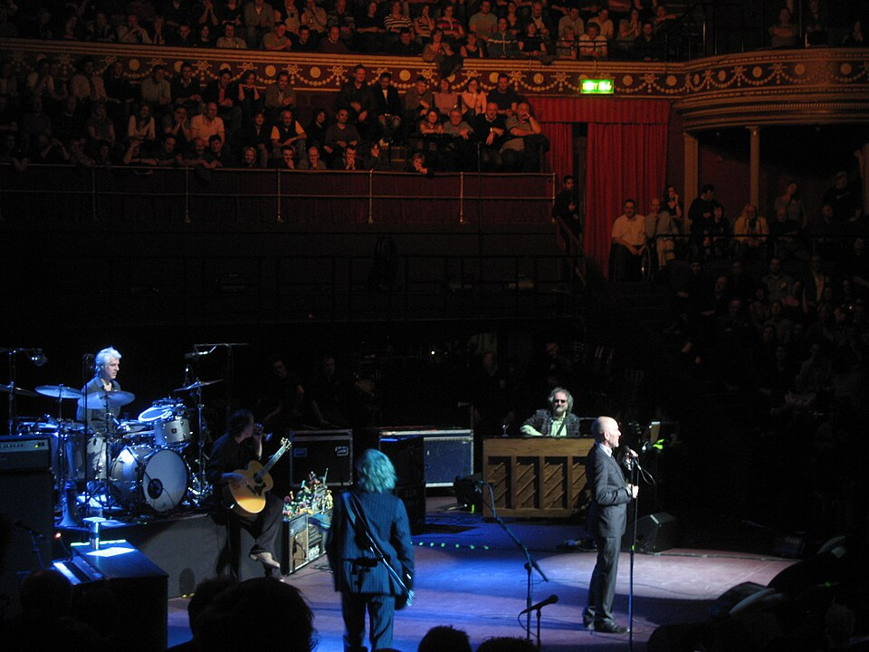

DIETRO IL TESTO · FOTO CANDIDATA · IN REVISIONE
R.E.M. alla Royal Albert Hall
Una proposta per la pagina artista. La fotografia mostra il concerto del 24 marzo 2008: l’inquadratura ampia comprende il palco e il pubblico della sala.

Limite visivo: molta sala nell’inquadratura e musicisti piccoli. Il file è preparato per la revisione; la pagina del sito conserva la grafica attuale.
Fonte e licenza verificate il 28 settembre 2026. Pagina d’uso prevista: /artista/r-e-m/.